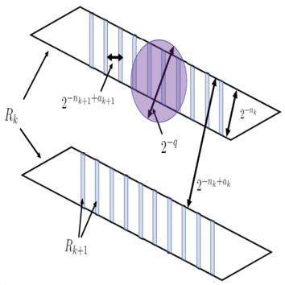
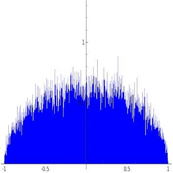
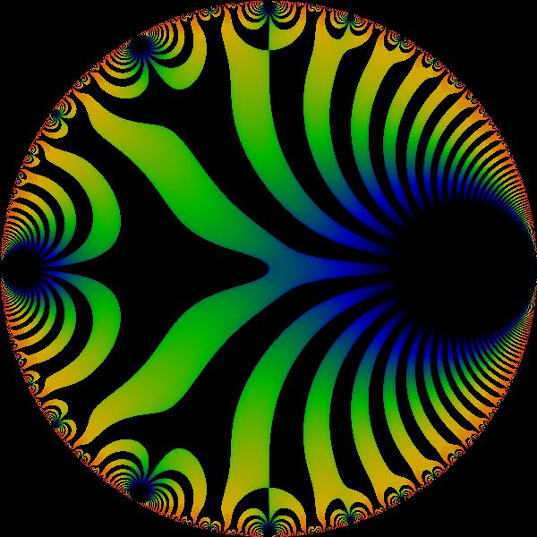
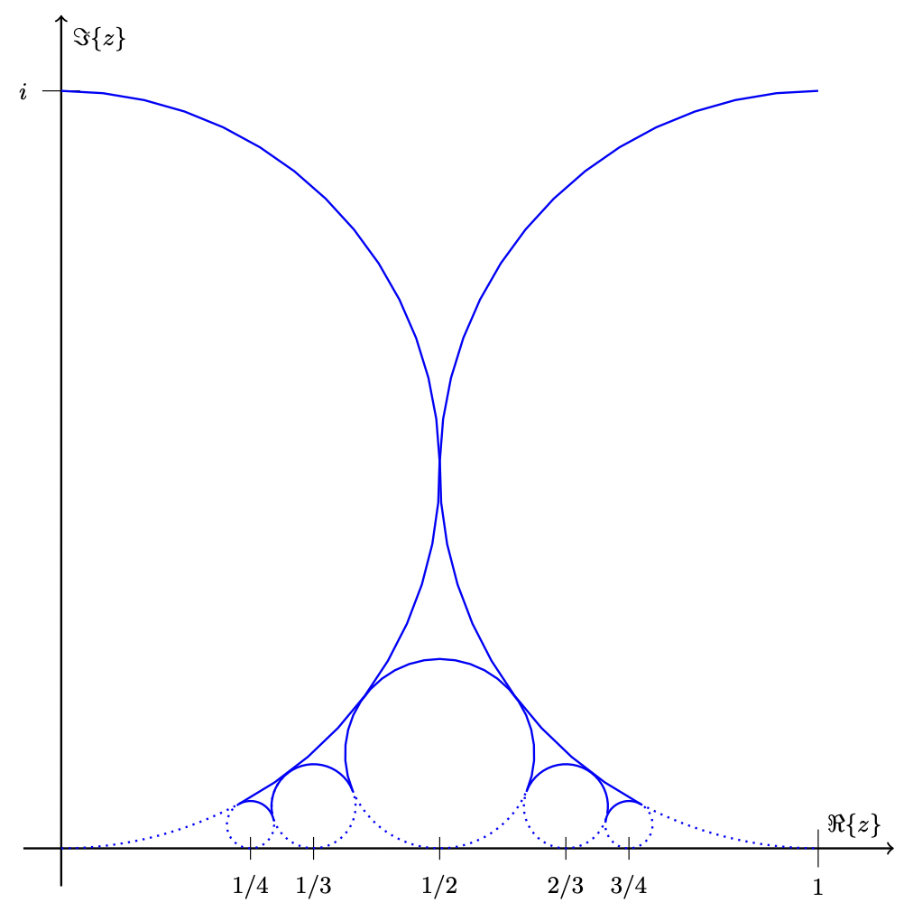
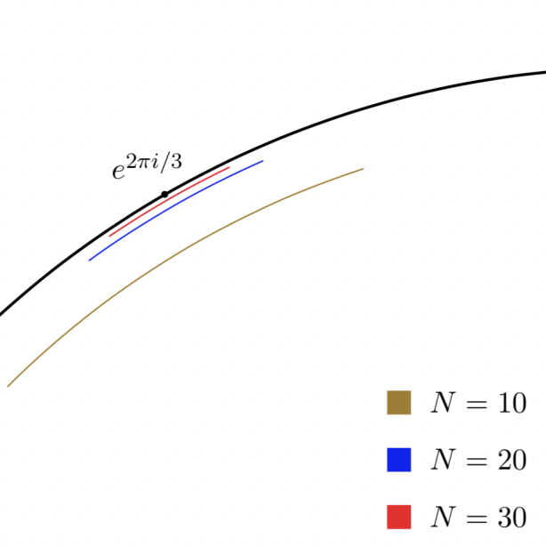

Patents (AI/ML)
2022
Methods and Systems for Dynamically Generating a Plurality of Machine Learning Systems During Processing of a User Data Set
Nate Gillman, Nadia Laflaf, Abraham Parangi, Jonathon Reilly, and Nathan Wies. U.S. Patent Application No. 63/411,898. Filed Sep 30, 2022.
Nate Gillman, Nadia Laflaf, Abraham Parangi, Jonathon Reilly, and Nathan Wies. U.S. Patent Application No. 63/411,898. Filed Sep 30, 2022.
Publications/Preprints (AI/ML)
2022
IsoScore: Measuring the Uniformity of Embedding Space Utilization
William Rudman, Nate Gillman, Taylor Rayne, and Carsten Eickhoff. ACL 2022.
arXiv / Project Page
William Rudman, Nate Gillman, Taylor Rayne, and Carsten Eickhoff. ACL 2022.
arXiv / Project Page
Publications/Preprints (Mathematics)
2021

Large sets with small injective projections
Frank Coen, Nate Gillman, Tamás Keleti, Dylan King, and Jennifer Zhu (2021). Annales Fennici Mathematici, 46(2), 683-702.
arXiv / Journal
2020
Frank Coen, Nate Gillman, Tamás Keleti, Dylan King, and Jennifer Zhu (2021). Annales Fennici Mathematici, 46(2), 683-702.
arXiv / Journal

Patterns of primes in the Sato-Tate conjecture
Nate Gillman, Michael Kural, Alexandru Pascadi, Junyao Peng, and Ashwin Sah (2020). Research in Number Theory, 6(9).
arXiv / Journal / MathSciNet
Nate Gillman, Michael Kural, Alexandru Pascadi, Junyao Peng, and Ashwin Sah (2020). Research in Number Theory, 6(9).
arXiv / Journal / MathSciNet

Explicit subconvexity savings for sup-norms of cusp forms on PGL(n,R)
Nate Gillman (2020). Journal of Number Theory, 206, 46-61.
arXiv / Journal / MathSciNet
2019
Nate Gillman (2020). Journal of Number Theory, 206, 46-61.
arXiv / Journal / MathSciNet

From partitions to Hodge numbers of Hilbert schemes of surfaces
Nate Gillman, Xavier Gonzalez, Ken Ono, Larry Rolen, and Matthew Schoenbauer (2019). Philosophical Transactions of the Royal Society A, 378: 20180435.
arXiv / Journal / MathSciNet
2018
Nate Gillman, Xavier Gonzalez, Ken Ono, Larry Rolen, and Matthew Schoenbauer (2019). Philosophical Transactions of the Royal Society A, 378: 20180435.
arXiv / Journal / MathSciNet

Exact formulas for invariants of Hilbert schemes
Nate Gillman, Xavier Gonzalez, and Matthew Schoenbauer (2018). Research in Number Theory 4(39).
arXiv / Journal / MathSciNet
Nate Gillman, Xavier Gonzalez, and Matthew Schoenbauer (2018). Research in Number Theory 4(39).
arXiv / Journal / MathSciNet
Image at top of page taken from advertisement for Wesleyan University.